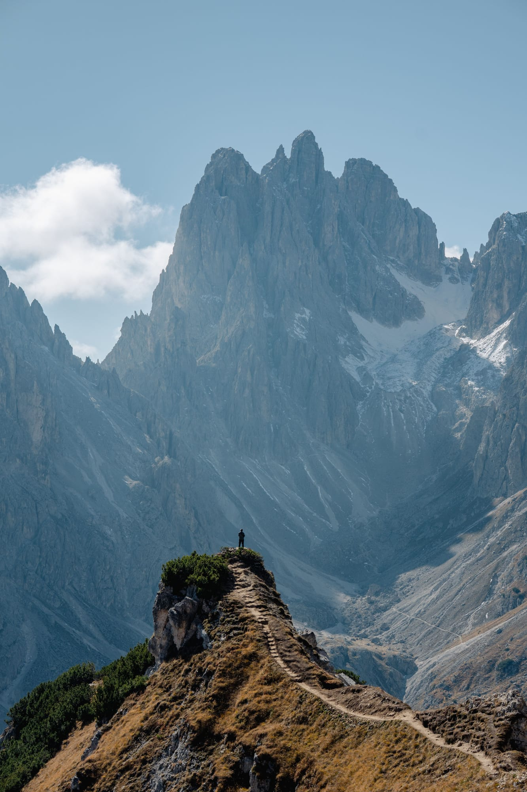

Plan The Route
Study the route, distance, elevation gain and difficulty. Choose a trip that matches your experience and set a turn-around time before you start.
ADVENTURE WITH RESPONSIBILITY
The summit is only halfway. Good preparation, honest decisions and respect for the mountain bring every climber home.
WHY SAFETY COMES FIRST
Weather can change within an hour. Altitude affects every body differently. A small problem such as a blister, a missed turn or a late start can become a serious emergency far from help.
Safety is not about avoiding adventure. It is a set of habits that lets you enjoy the mountains again and again.
The guidelines on this page apply to everyone, from a weekend trekker to an expedition climber. Read them before every trip, and combine them with the specific advice on our Hazards and Sheltering pages.

PLAN THE WHOLE JOURNEYTHE SIX PILLARS
Six areas every climber, trekker and camper should understand before leaving home.
Study the route, distance, elevation gain and difficulty. Choose a trip that matches your experience and set a turn-around time before you start.
Read the mountain forecast the day before and again on the morning of departure. Wind, snow and storms matter more than temperature alone.
Dress in layers, wear broken-in boots and pack a headlamp, map, first-aid kit, extra food, water and an emergency blanket.
Build endurance weeks ahead. On high peaks, ascend gradually and include rest days so your body can adapt to thinner air.
Never climb alone on difficult terrain. Move at the pace of the slowest member and hire a qualified guide when conditions are unfamiliar.
Tell someone your route and return time. Know the local rescue number, carry a charged phone or satellite device and learn basic first aid.
KNOW THE WARNING SIGNS
It can affect anyone above roughly 2,500 metres, whatever their fitness. Recognising the stages early can save a life.
Headache, nausea, dizziness, poor sleep, tiredness.
Action: stop climbing, rest, drink water.Severe headache, vomiting, loss of balance, shortness of breath at rest.
Action: descend now. Do not go higher.Confusion, cannot walk straight, wet cough, blue lips.
Action: descend immediately and call rescue.
GENERAL GUIDELINES
Beyond personal safety, these guidelines protect the mountains, the people who live there and the climbers who come after you.
Carry out everything you carry in, including food scraps and used gas canisters. Camp on durable surfaces, use existing toilets or carry human waste bags where required, and never leave fixed ropes or rubbish on the mountain.
Many peaks and national parks need a climbing or trekking permit. In Pakistan, foreign climbers on major Karakoram peaks need a permit from the Gilgit-Baltistan authorities and usually a licensed liaison or guide. Check the current rules before you book flights.
Mountain villages are homes, not attractions. Dress modestly, ask before taking photographs of people, respect religious sites such as prayer flags and shrines, and buy food and services locally to support the community.
Use licensed guiding companies. Make sure porters carry a fair load, have proper clothing and insurance, and are paid an honest wage. Their safety is part of your responsibility.
Standard travel insurance often excludes high-altitude climbing. Buy a policy that covers helicopter rescue and medical evacuation at the altitude you plan to reach, and carry the policy number with you.
Keep a safe distance from all animals and never feed them. Treat or filter all drinking water, and wash at least 60 metres away from streams and lakes.
BEFORE YOU LEAVE
Tick each item as you finish it. Your progress shows below and is saved in this browser.
0 of 10 complete
KEEP LEARNING
Continue with shelter basics or explore the hazards you may face on the mountain.
This page is educational. It does not replace training, a qualified guide or local rescue advice.